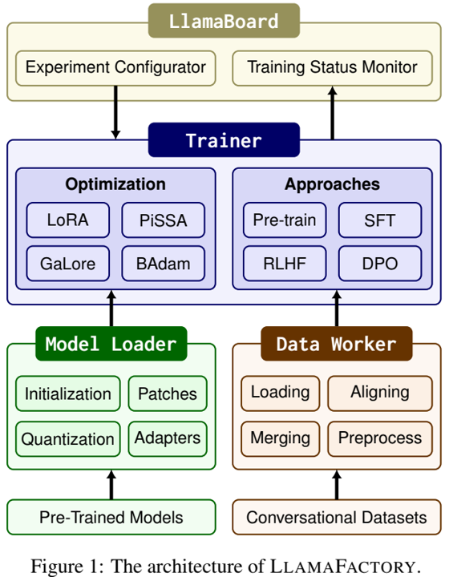
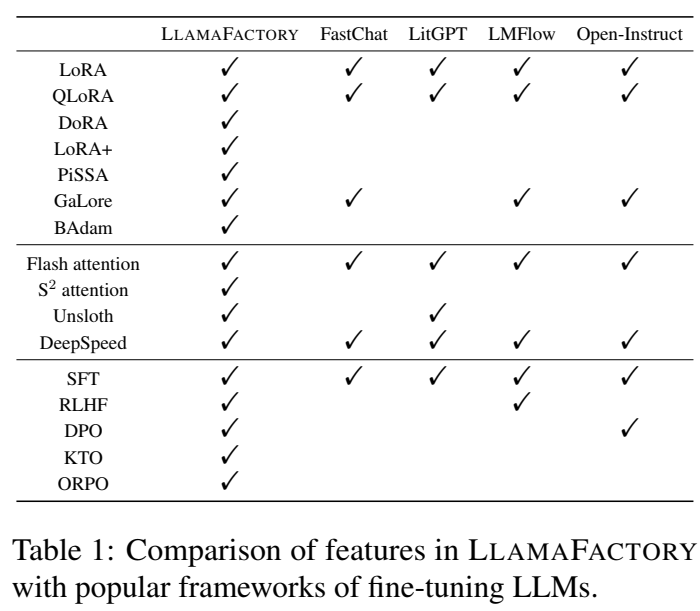
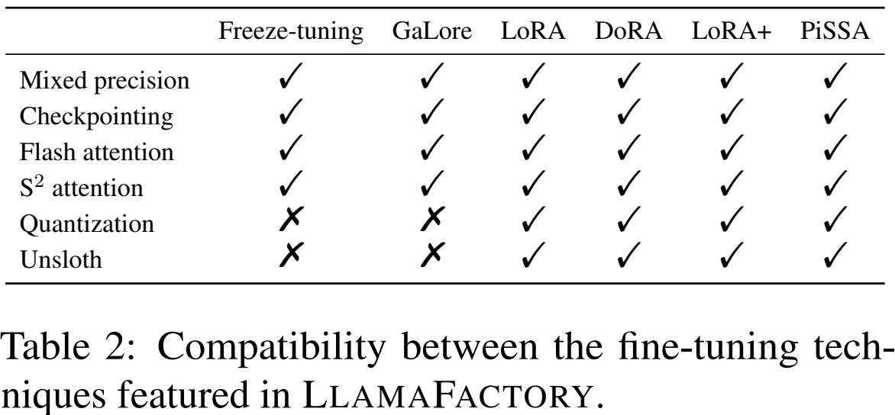
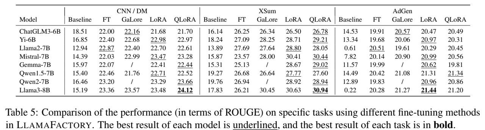

论文阅读七：LLaMA-Factory：100多种语言模型的统一高效微调

摘要
高效的微调对于使大型语言模型（LLM）适应下游任务至关重要。然而，在不同的模型上实现这些方法需要付出巨大的努力。我们介绍LLAMAFACTORY，这是一个整合了一套尖端高效训练方法的统一框架。它提供了一种解决方案，可以灵活地定制100多个LLM的微调，而无需通过内置的web UI LLAMABOARD进行编码。我们实证验证了我们的框架在语言建模和文本生成任务上的效率和有效性。它已发布于 https://github.com/hiyouga/LLaMA-Factory ，并获得了25000多颗星和3000个fork。
引言
大型语言模型（LLM）（赵等人，2023）具有显著的推理能力，并赋予了广泛的应用，如问答（Jiang等人，2023b）、机器翻译（Wang等人，2023c；Jiao等人，2023a）和信息提取（Jiao等人（2023b））。随后，大量LLM被开发出来，并可通过开源社区访问。例如，Hugging Face的开放式LLM排行榜（Beeching等人，2023）拥有5000多个模特，为寻求利用LLM力量的个人提供了便利。
用有限的资源微调大量参数成为使LLM适应下游任务的主要挑战。一种流行的解决方案是高效的微调（Houlsby等人，2019；Hu等人，2022；Dettmers等人，2023），这降低了LLM在适应各种任务时的训练成本。然而，社区为高效的微调提供了各种方法，缺乏一个系统框架来适应和统一这些方法到不同的LLM，并为用户定制提供友好的界面。
为了解决上述问题，我们开发了LLAMAFACTORY，这是一个使LLM微调民主化的框架。它通过可扩展的模块统一了各种高效的微调方法，能够以最少的资源和高吞吐量对数百个LLM进行微调。此外，它简化了常用的训练方法，包括生成预训练（Radford等人，2018）、监督微调（SFT）（Wei等人，2022）、基于人类反馈的强化学习（RLHF）（Ouyang等人，2022年）和直接偏好优化（DPO）（Rafailov等人，2023年）。用户可以利用命令行或web界面来定制和微调他们的LLM，只需很少或根本不需要编码工作。
LLAMAFACTORY由三个主要模块组成：模型加载器（Model Loader）、数据工作者（Data Worker）和训练器（Trainer）。我们最大限度地减少了这些模块对特定模型和数据集的依赖，使框架能够灵活地扩展到数百个模型和数据集中。具体来说，我们首先建立一个模型注册表，模型加载器可以通过识别精确的层将适配器精确地连接到预训练的模型。然后，我们开发了一个数据描述规范，允许数据工作者通过对齐相应的列来收集数据集。此外，我们提供最先进的高效微调方法的即插即用实现，使训练师能够通过替换默认方法来激活。我们的设计允许这些模块在不同的训练方法中重复使用，从而显著降低了集成成本。
LLAMAFACTORY使用PyTorch实现（Paszke等人，2019），并从开源库中受益匪浅，如Transformers（Wolf等人，2020）、PEFT（Mangrulkar等人，2022）和TRL（von Werra等人，2020年）。在此基础上，我们提供了一个具有更高抽象级别的开箱即用框架。此外，我们使用Gradio（Abid等人，2019）构建了LLAMABOARD，可以在不需要编码的情况下对LLM进行微调。
LLAMAFACTORY是根据Apache-2.0许可证开源的。它已经在GitHub上获得了25000多颗星和3000个分支，并且在Hugging Face Hub1的LLAMAFACTORY上构建了数百个开源模型。例如，Truong等人（2024）基于LLAMAFACTORY构建了GemSUra-7B，揭示了Gemma（Mesnard等人，2024）的跨语言能力。此外，数十项研究利用我们的框架来探索LLM（Wang等人，2023a；Yu等人，2023；Bhardwaj等人，2024）。
相关工作
随着对微调LLM的需求迅速增加，已经开发了许多使LLM适应特定目的的框架。LLaMAAdapter（Zhang等人，2024）使用零初始化注意力有效地微调Llama模型（Touvron等人，2023a）。FastChat（Zheng等人，2023）是一个专注于训练和评估LLM以完成聊天的框架。LitGPT（AI，2023）提供生成模型的实现，并支持各种训练方法。Open Instruct（Wang等人，2023d）提供了训练指令模型的配方。Colossal AI（Li等人，2023b）采用先进的并行策略进行分布式训练。LMFlow（Diao等人，2024）支持为专业领域或任务训练LLM。GPT4All（Anand等人，2023）允许LLM在消费设备上运行，同时还提供微调功能。与现有的竞争框架相比，LLAMAFACTORY支持更广泛的高效微调技术和训练方法。我们在表1中列出了代表性框架中的特征。

高效的微调技术
高效的LLM微调技术可分为两大类：侧重于优化的技术和旨在计算的技术。高效优化技术的主要目标是微调LLM的参数，同时将成本降至最低。另一方面，高效的计算方法寻求减少LLM中所需计算的时间或空间。LLAMAFACTORY中包含的方法列于表2中。我们将在以下部分介绍这些高效的微调技术，并展示将其纳入我们的框架所实现的显著效率提高。

高效优化
首先，我们概述了LLAMAFACTORY中使用的高效优化技术。冻结调谐方法（Houlsby等人，2019）涉及冻结大多数参数，同时微调解码器层一小部分中的其余参数。另一种称为梯度低阶投影（GaLore）的方法（赵等人，2024）将梯度投影到低维空间中，以高效记忆的方式促进全参数学习。同样，BAdam（Luo等人，2024）利用块坐标下降（BCD）有效地优化了广泛的参数。相反，低秩自适应（LoRA）（Hu等人，2022）方法冻结所有预训练的权重，并将一对可训练的低秩矩阵引入指定层。当与量化相结合时，这种方法被称为QLoRA（Dettmers等人，2023），它还减少了内存使用。DoRA（Liu等人，2024）将预先训练的权重分解为幅度和方向分量，并更新方向分量以提高性能。LoRA+（Hayou等人，2024）被提出以克服LoRA的次优性。PiSSA（Meng等人，2024）使用预训练权重的主成分初来始化适配器，以实现更快的收敛。
高效计算
在LLAMAFACTORY中，我们集成了一系列高效计算技术。常用的技术包括混合精度训练（Micikevicius等人，2018）和激活检查点（Chen等人，2016）。通过对注意力层的输入输出（IO）费用的检查，flash attention（Dao等人，2022）引入了一种硬件友好的方法来增强注意力计算。 注意力（Chen等人，2024b）通过转移稀疏注意力来应对扩展上下文的挑战，从而减少了微调长上下文LLM时的内存使用。各种量化策略（Dettmers等人，2022a；Frantar等人，2023；Lin等人，2023，Egiazarian等人，2024）通过利用较低精度的权重表示来降低大型语言模型（LLM）中的内存需求。然而，量化模型的微调仅限于基于适配器的技术，如LoRA（Hu等人，2022）。Unsloth（Han和Han，2023）采用Triton（Tillet等人，2019）来实现LoRA的反向传播，这减少了梯度下降过程中的浮点运算（FLOP），并加快了LoRA训练。
LLAMAFACTORY将这些技术无缝结合成一个有凝聚力的结构，以提高LLM微调的效率。这导致内存占用从混合精度训练期间的每个参数18个字节（Micikevicius等人，2018）或半精度训练中的每个参数8个字节（Le Scao等人，2022）减少到每个参数仅0.6个字节。后续章节将对LLAMAFACTORY中的组件进行进一步阐述。
LLAMAFACTORY框架
LLAMAFACTORY由三个主要模块组成：模型加载器、数据工作者和训练器。模型加载器操纵各种模型架构进行微调，支持大型语言模型（LLM）和视觉语言模型（VLM）。Data Worker通过精心设计的管道处理来自不同任务的数据，支持单轮和多轮对话。训练师将高效的微调技术应用于不同的训练方法，支持预训练、指令调整和偏好优化。除此之外，LLAMABOARD提供了一个友好的视觉界面来访问这些模块，使用户能够无代码地配置和启动单个LLM微调实例，并同步监控训练状态。我们在图1中说明了这些模块与LLAMAFACTORY的整体架构之间的关系。
模型加载器
本节首先介绍了模型加载器中的四个组件：模型初始化、模型拼接、模型量化和适配器连接，然后描述了我们通过在微调过程中处理参数浮点精度来适应各种设备的方法。
模型初始化我们利用Transformers的自动分类（Wolf等人，2020）来加载预训练模型并初始化参数。具体来说，我们使用AutoModelForVision2Seq类加载视觉语言模型，而其余的则使用AutoModelForCausalLM类加载。tokenizer与模型一起使用AutoTokenizer类加载。在tokenizer的词汇量超过嵌入层容量的情况下，我们调整层的大小，并使用噪声均值初始化来初始化新参数。为了确定RoPE缩放的缩放因子（Chen等人，2023），我们将其计算为最大输入序列长度与模型上下文长度的比率。
模型拼接为了实现S2注意力，我们使用猴子补丁来代替模型的前向计算。然而，我们使用本地类来启用flash注意力，因为自Transformers 4.34.0以来，它得到了广泛的支持。为了防止动态层的过度划分，我们在DeepSpeed ZeRO第三阶段优化MoE模型时，将专家混合（MoE）块设置为叶子模块（Rasley等人，2020）。
模型量化可以通过bitsandbytes库（Dettmers，2021）使用LLM.int8（Dettmer等人，2022a）将模型动态量化为8位或4位。对于4位量化，我们使用双量化和4位正常浮点数作为QLoRA（Dettmers等人，2023）。我们还支持对训练后量化（PTQ）方法量化的模型进行微调，包括GPTQ（Frantar等人，2023）、AWQ（Lin等人，2023年）和AQLM（Egiazarian等人，2024年）。请注意，我们不能直接微调量化权重；因此，量化模型仅与基于适配器的方法兼容。
适配器连接我们通过遍历模型层自动识别要连接适配器的适当层。低秩适配器连接到所有线性层，以实现更好的收敛，如（Dettmers等人，2023）所述。PEFT（Mangrulkar等人，2022）库提供了一种极其方便的方法来实现基于适配器的方法，如LoRA（Hu等人，2022年）、rsLoRA（Kalajdzievski，2023年）、DoRA（Liu等人，2024年）和PiSSA（Meng等人，2024年）。我们用Unsloth（Han和Han，2023）的反向计算代替，以加速训练。为了执行基于人类反馈的强化学习（RLHF），在变换器模型的顶部附加一个值头层（value head layer)，将每个token的表示映射到标量。
精度自适应我们根据计算设备的能力处理预训练模型的浮点精度。对于NVIDIA GPU，如果计算能力为8.0或更高，我们采用bfloat16精度。否则，采用float16。此外，我们为Ascend NPU和AMD GPU采用float16，为非CUDA设备采用float32。在混合精度训练中，我们将所有可训练参数设置为float32，以提高训练稳定性。然而，在半精度训练中，我们将可训练参数保留为bfloat16。
数据工作者
我们开发了一个数据处理管道，包括数据集加载、数据集对齐、数据集合并和数据集预处理。它将不同任务的数据集标准化为统一的格式，使我们能够在各种格式的数据集上微调模型。
数据集加载我们利用Datasets（Lhoest等人，2021）库加载数据，这允许用户从Hugging Face Hub加载远程数据集，或通过脚本或文件读取本地数据集。Datasets库显著降低了数据处理过程中的内存开销，并使用Arrow加速了样本查询（Apache，2016）。默认情况下，整个数据集被下载到本地磁盘。然而，如果数据集太大而无法存储，我们的框架会提供数据流来迭代它，而无需下载。
数据集对齐为了统一数据集格式，我们设计了一个数据描述规范来表征数据集的结构。例如，羊驼数据集有三列：指令、输入和输出（Taori等人，2023）。我们根据数据描述规范将数据集转换为与各种任务兼容的标准结构。数据集结构的一些示例如表3所示。
数据集合并统一的数据集结构为合并多个数据集提供了一种有效的方法。对于非流模式的数据集，我们只需在训练期间对数据集进行混洗之前将它们连接起来。然而，在流模式下，简单地连接数据集会阻碍数据洗牌。因此，我们提供了交替读取不同数据集数据的方法。
数据集预处理LLAMAFACTORY旨在微调文本生成模型，主要用于聊天完成。聊天模板是这些模型中的关键组成部分，因为它与这些模型的指令遵循能力高度相关。因此，我们提供了数十个聊天模板，可以根据模型类型自动选择。我们使用标记器应用聊天模板后对句子进行编码。默认情况下，我们只计算完井损失，而忽略提示（Taori等人，2023）。可选地，我们可以利用序列打包（Krell等人，2021）来减少训练时间，这在执行生成预训练时会自动启用。
训练器
高效训练我们通过替换默认组件，将最先进的高效微调方法，包括LoRA+（Hayou et al.，2024）、GaLore（赵et al.，424）和BAdam（Luo et al.，024）集成到训练师中。这些微调方法独立于训练师，使其易于应用于各种任务。我们使用Transformers（Wolf等人，2020）的训练师进行预训练和SFT，同时采用TRL（von Werra等人，2020年）的训练员进行RLHF和DPO。我们还包括来自TRL库的高级偏好优化方法的训练师，如KTO（Ethayarajh等人，2024）和ORPO（Hong等人，2024）。利用定制的数据整理器来区分各种训练方法的训练师。为了匹配训练器对偏好数据的输入格式，我们在一批中构建2n个样本，其中前n个样本是被选中的样本，最后n个样本则是被拒绝的样本。
模型共享RLHF允许在消费设备上进行RLHF训练对于LLM微调的民主化至关重要。然而，这很困难，因为RLHF训练需要四种不同的模型。为了解决这个问题，我们提出了模型共享RLHF，使整个RLHF训练不超过一个预训练模型。具体来说，我们首先使用奖励建模的目标函数训练一个适配器和一个值头，使模型能够计算奖励分数。然后，我们初始化另一个适配器和值头，并用PPO算法对其进行训练（Ouyang等人，2022）。在训练过程中，适配器和价值头通过PEFT的set_adapter和disable_adapter方法动态切换（Mangrulkar等人，2022），允许单个预训练模型同时用作策略模型、价值模型、参考模型和奖励模型。据我们所知，这是第一种支持消费设备上RLHF训练的方法。
分布式训练我们可以将上述训练器与DeepSpeed（Rasley等人，2020；Ren等人，2021）结合起来进行分布式训练。我们采用数据并行来充分利用计算设备的能力。利用DeepSpeed ZeRO优化器，可以通过分区或卸载进一步减少内存消耗。
组件(Utilities)
模型推理在推理过程中，我们重用数据工作者中的聊天模板来构建模型输入。我们支持使用Transformer（Wolf等人，2020）和vLLM（Kwon等人，2023）对模型输出进行采样，这两种方法都支持流解码。此外，我们实现了一个OpenAI风格的API，该API利用异步LLM引擎和vLLM的分页注意力，提供高吞吐量的并发推理服务，有助于将经过微调的LLM部署到各种应用程序中。
模型评估我们包括评估LLM的几个指标，包括多项选择任务，如MMLU（Hendrycks等人，2021）、CMMLU（Li等人，2023a）和C-Eval（Huang等人，2023），以及计算BLEU-4（Papineni等人，2002）和ROUGE（Lin，2004）等文本相似性得分。此功能便于用户衡量微调模型的能力。
LLAMABOARD：LLAMAFACTORY的统一接口
LLAMABOARD是基于Gradio（Abid等人，2019）的统一用户界面，允许用户在不编写任何代码的情况下自定义LLM的微调。它提供了一种简化的模型微调和推理服务，使用户能够轻松探索LLM在其环境中的潜力。LLAMABOARD具有以下显著特点。
易于配置LLAMABOARD允许我们通过与web界面的交互来定制微调参数。我们为大多数用户推荐的大多数参数提供默认值，简化了配置过程。此外，用户可以在web UI上预览数据集以进行验证。
可监控训练在训练过程中，训练日志和损失曲线实时可视化和更新，使用户能够监控训练进度。此功能为分析微调过程提供了宝贵的见解。
灵活评估LLAMABOARD支持计算数据集上的文本相似性得分，以自动评估模型或通过与模型聊天进行人工评估。
多语言支持LLAMABOARD提供本地化文件，便于集成新语言来呈现界面。目前，我们支持三种语言：英语、俄语和中文，这允许更广泛的用户使用LLAMABARD来微调LLM。
实证研究
我们从两个角度系统地评估了LLAMAFACTORY：1）在内存使用、吞吐量和困惑度方面的训练效率。2） 适应下游任务的有效性
训练效率
实验设置我们使用PubMed数据集（Canese和Weis，2013），其中包含3600多万条生物医学文献记录。我们从文献摘要中提取了大约40万个标记来构建训练语料库。然后，我们使用生成预训练目标和各种有效的微调方法对Gemma-2B（Mesnard等人，2024）、Llama2-7B和Llama2-13B（Touvron等人，2023b）模型进行微调。我们比较了全调谐、冷冻调谐、GaLore、LoRA和4位QLoRA的结果。经过微调后，我们计算训练语料库的困惑度，以评估不同方法的效率。我们还将预训练模型的困惑作为基线。
在这个实验中，我们采用10-5的学习率，512的令牌批大小。我们使用具有激活检查点的bfloat16精度的8位AdamW优化器（Dettmers等人，2022b）对这些模型进行微调，以减少内存占用。在冻结调优中，我们只对模型的最后3个解码器层进行微调。对于GaLore，我们将rank和scale分别设置为128和2.0。对于LoRA和QLoRA，我们将适配器连接到所有线性层，并将秩和alpha分别设置为128和256。所有实验均在单个NVIDIA A100 40GB GPU上进行。我们在所有实验中启用闪光注意力，在LoRA和QLoRA实验中启用Uncloth。
结果关于训练效率的结果如表4所示，其中内存是指训练过程中消耗的峰值内存，吞吐量是指每秒训练的令牌数量，PPL表示模型在训练语料库上的困惑度。由于满调Llama2-13B会导致内存溢出，因此不会记录结果。我们观察到QLoRA始终具有最低的内存占用，因为预训练的权重以较低的精度表示。利用Unloth在LoRA层中的优化，LoRA显示出更高的吞吐量。GaLore在大型型号上实现了较低的PPL，而LoRA在小型型号上具有优势。

对下游任务进行微调
实验设置为了评估不同高效微调方法的有效性，我们比较了下游任务微调后各种模型的性能。我们使用来自三个代表性文本生成任务的2000个示例和1000个示例构建非重叠训练集和测试集，分别包括CNN/DM（Nallapati等人，2016）、XSum（Narayan等人，2018）和AdGen（Shao等人，2019）。我们选择了几个指令调优模型，并使用不同的微调方法按照顺序对任务进行微调。然后我们比较了全调谐（FT）、GaLore、LoRA和4位QLoRA的结果。经过微调后，我们计算了每个任务测试集的ROUGE分数（Lin，2004）。我们还将原始指令调整模型的分数作为基线。
在这个实验中，我们将学习率设置为10−5，批处理大小设置为4，最大输入长度设置为2048。我们使用具有激活检查点的bfloat16精度的8位AdamW优化器（Dettmers等人，2022b）对这些模型进行微调。对于GaLore，我们将排名和规模分别设置为128和2.0。对于LoRA和QLoRA，我们将适配器连接到所有线性层，并将秩和alpha分别设置为128和256。所有实验均在NVIDIA A100 40GB GPU上进行。
结果下游任务的评估结果如表5所示。我们报告了ROUGE-1、ROUGE-2和ROUGEL的平均得分。Gemma-7B和Qwen2-7B（Bai等人，2023）模型的一些结果未包含在表中，因为GaLore方法可能不适用于它们。结果中的一个有趣发现是，除了CNN/DM和AdGen数据集上的ChatGLM3-6B（Zeng等人，2024）和Llama2-7B模型外，LoRA和QLoRA在大多数情况下都达到了最佳性能。这一现象突显了这些有效的微调方法在使LLM适应特定任务方面的有效性。此外，我们观察到Llama3-8B在这些模型中表现最佳，而Yi-6B（Young等人，2024）和Mistral-7B（Jiang等人，2023a）在相同尺寸的模型中表现出具有竞争力的性能。

结论和未来工作
在本文中，我们展示了LLAMAFACTORY，这是一个用于高效微调LLM的统一框架。通过模块化设计，我们最大限度地减少了模型、数据集和训练方法之间的依赖性，并提供了一种集成方法，通过各种高效的微调技术对100多种LLM进行微调。此外，我们还提供灵活的web UI LLAMABOARD，无需编码即可对LLM进行自定义微调和评估。我们实证验证了我们的框架在语言建模和文本生成任务上的效率和有效性。
我们将始终如一地保持LLAMAFACTORY与最先进的模型和高效的微调技术同步。我们也欢迎开源社区的贡献。LLAMAFACTORY的路线图包括：
（1） 能够对支持更广泛模态的模型进行微调，例如音频和视频模态（Zhu等人，2024a）。
（2） 整合更多的并行训练策略，例如序列并行性（Jacobs等人，2023）和张量并行性（Shoeybi等人，2019）。
（3） 探索会话模型的更强微调方法，例如self-play（Chen等人，2024c；袁等人，2024）
更广泛的影响和负责任的使用
LLAMAFACTORY吸引了大量对LLM感兴趣的人来探索定制模型的可能性。这对开源社区的发展做出了重大贡献。它正受到越来越多的关注，并作为LLM高效微调框架的代表出现在《Awesome Transformers 2》中。我们期望从业者在我们的框架上建立他们的LLM，为社会带来利益。在使用LLAMAFACTORY对LLM进行微调时，必须遵守模型许可证，从而防止任何潜在的滥用。